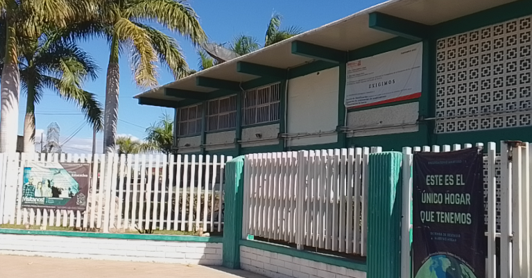
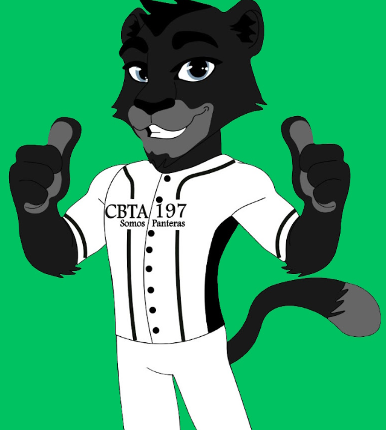

CONTACTO

TU VOZ HACE LA DIFERENCIA
Usa este canal para reportar zonas acumuladas de basura, fugas de agua o proponer proyectos ecológicos para el CBTA 197. ¡Juntos mantenemos limpio nuestro entorno escolar!
